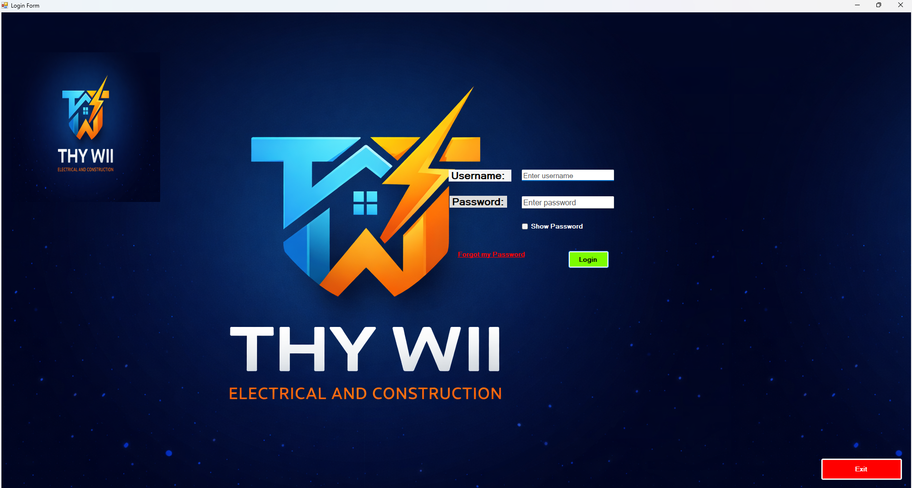
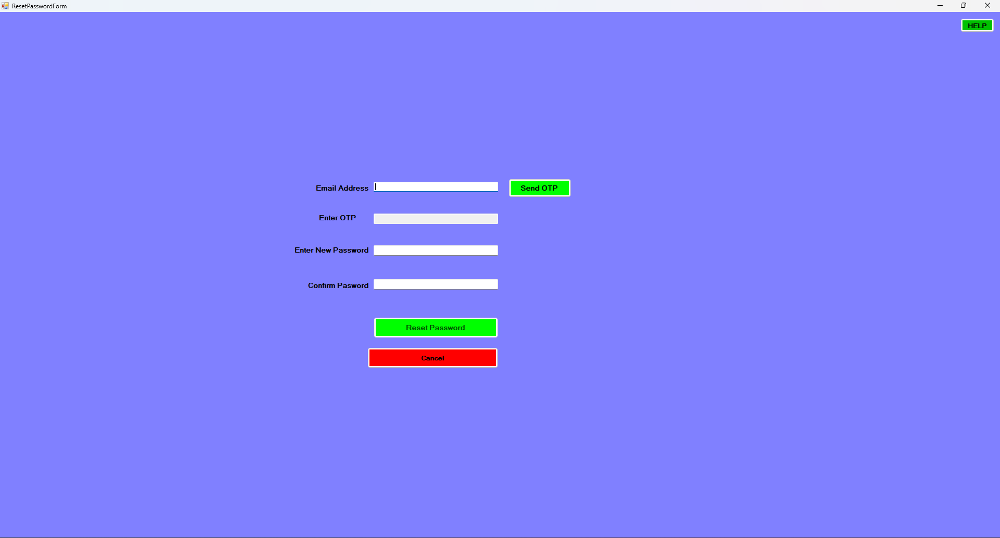
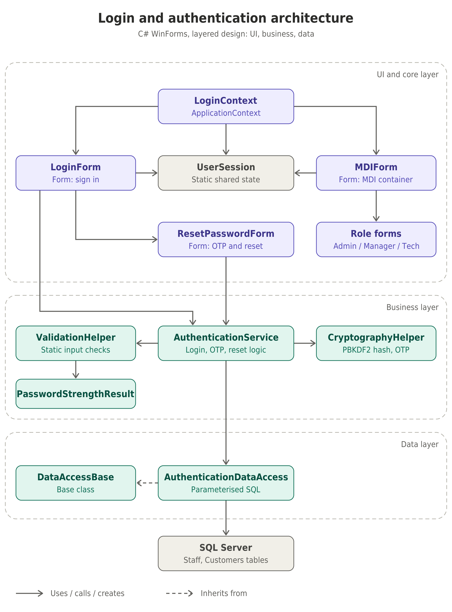

Customer management
Maintain customer information and connect customers to their jobs.
C# · .NET Framework · Final-year group project
A job and inventory management system for an electrical and construction business. The project began as a Windows Forms desktop application and was extended into an ASP.NET Web Forms version, using C# and SQL Server.
The project at a glance
Thywill was designed to help an electrical and construction business organise customer records, jobs, technicians and inventory.
Maintain customer information and connect customers to their jobs.
Record jobs, assign technicians and track work through its status.
Manage stock records and account for materials required for jobs.
Calculate job costs and generate PDF invoices from job information.
02 — Application architecture
The application uses a layered structure to keep user-interface code, business operations and database access in separate responsibilities.
Conceptual view of the application's layered structure. It is an explanatory diagram rather than a generated runtime architecture map.
03 — My contribution
I worked on the authentication functionality and several application workflows. My authentication implementation was structured so that the forms handled interaction while reusable service and helper classes handled the underlying operations.
Implemented a reusable PBKDF2-based password helper. It generates a unique random salt for each password, derives a 32-byte hash, and verifies entered passwords against the stored hash instead of comparing plaintext passwords.
Built authentication methods in
AuthenticationService for staff and customer
accounts. The service retrieves the account data through
AuthenticationDataAccess, verifies the password
hash and returns the relevant account identity information.
Implemented a password-reset workflow that generates a six-digit OTP, records a five-minute expiry, queues an email and validates the submitted code before updating the password. The reset operation hashes the new password and clears the OTP after a successful update.
Created UserSession to hold the authenticated
staff member's ID, name and role.
LoginContext controls the desktop application's
transition from the login form to the main MDI form and
clears the session when the main form closes.
Centralised common checks in ValidationHelper,
including email, South African phone number, username and
password rules. The password-reset interface also provides
a live checklist for password requirements.
Also contributed to CRUD operations and validation for customers, jobs, staff and inventory, job workflows, cost calculations and PDF invoice functionality.
04 — Authentication flow
The form collects credentials, the service coordinates verification, and the session is initialised only after successful authentication.
AuthenticationService.AuthenticateUser().
CryptographyHelper.VerifyPassword() derives
a hash using the stored salt and compares the result.
UserSession.Initialize() stores the
authenticated user's session information.
LoginContext opens the main MDI application.
05 — Interface evidence
These screenshots should show the actual application screens. Replace the image paths below with your own captures. Click any image to view it at a larger size.



Reflection
This work helped me understand that authentication is more than checking whether two strings match. It involves password storage, verification, recovery workflows, session state and the way the rest of an application responds to an authenticated user.
It also gave me practical experience separating presentation, business and data-access responsibilities. Keeping the authentication operations in reusable classes made the workflow easier to follow and gave me a clearer place to improve the implementation.
A further lesson was the difference between authentication and authorisation: identifying a user is only one part of access control. The application must also consistently enforce what each role is permitted to do.
Project context
The project used a university-controlled SQL Server environment. That environment limited full end-to-end testing of some features, particularly when access to the database environment was not available.
The system was developed as a university group project. The implementation demonstrates practical development and integration work, rather than a production deployment.
Technology
Technologies used across the desktop and web versions of the project.
Explore more
Explore my other projects or get in touch to discuss graduate opportunities and junior software development roles.